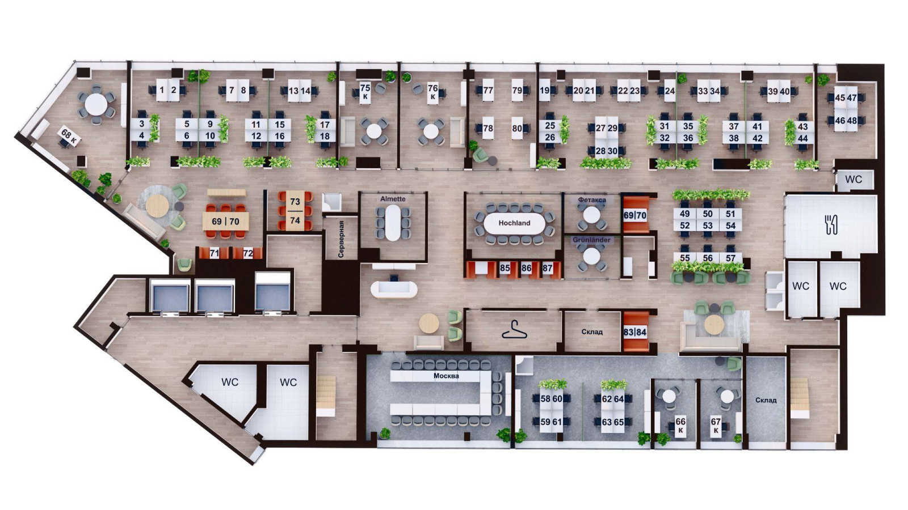
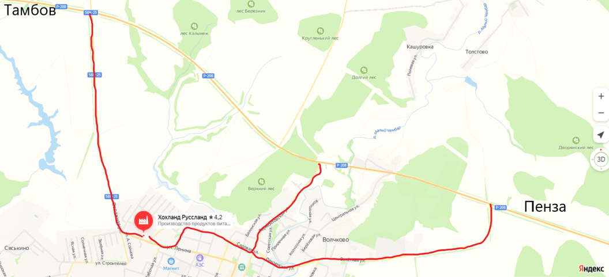

Офис расположен на набережной реки Яузы по адресу: улица
Электрозаводская, дом 27, строение 8, 3-й этаж, БЦ «Лефорт»,
холл B.
Это пятиэтажное здание с облицовкой из серых стеклянных
панелей с оранжевыми вставками. Ресепшен БЦ «Лефорт»
расположен на 2-м этаже — фактически 1-й, если входить со
стороны улицы Электрозаводской. Также можно зайти в здание со
стороны Преображенской набережной, но тогда необходимо будет
подняться по лестнице или на лифте на 2-й этаж в зону
ресепшен.
Для посещения необходим пропуск — его поможет оформить
секретарь. Если у тебя нет постоянного пропуска, позвони
накануне визита в офис БЦ «Лефорт» секретарю Елене Бакрушевой
(8 (985) 428-63-74) с 9:00 до 18:00 и закажи гостевой пропуск
либо напиши заявку на электронную почту:
Elena.Bakrusheva@hochland.com.
Сам пропуск ты сможешь получить на ресепшен БЦ «Лефорт» в день
визита. Для получения гостевого пропуска возьми с собой
паспорт или водительские права.
Если ты поедешь на машине, то заранее забронируй через
секретаря место на парковке, расположенной на территории БЦ.
Для этого нужно сообщить дату визита, марку автомобиля,
госномер.
- въезд № 2 со стороны улицы Электрозаводской (свободные места № 78–82);
- въезд № 5 со стороны Преображенской набережной (свободные места № 517–527).
Как дойти до офиса пешком от метро?
Чтобы было удобнее выходить, садись в последний вагон из центра. Выход № 10 или 11.
Выйдя из метро, обойди бизнес-центр с левой стороны к Суворовской улице, пройди сквер по диагонали и поверни налево, двигайся вдоль улицы Буженинова. Далее поверни на улицу Титова (справа) и иди прямо.
Как перейдешь улицу Электрозаводскую, иди к шлагбауму – выезд № 1 (пешеходам проход свободный), вдоль темно-серого здания (строение №9 на карте) до арки в здании. Пройди под аркой и немного прямо, справа будет вход.
Садись в первый вагон метро из центра.
От метро поверни налево, пройди через подземный переход под улицей Большая Семеновская, пока не выйдешь на площадь Журавлева. Далее двигайся вдоль до пересечения с улицей Электрозаводской и поверни направо, продолжая движение вдоль улицы Электрозаводской. На 2-м Электрозаводском переулке поверни налево вдоль кирпичной ограды БЦ «Лефорт» и войди в первый по ходу движения въезд со шлагбаумом.
Выйдя из метро, пройди под железнодорожным мостом. Слева будет ТЦ «Заря». Далее следуй по маршруту, описанному выше.
Схема офиса компании в Москве

Завод располагается в поселке Прохоровка Белгородской области
по адресу: улица Мичурина, дом 48.
Если ты собираешься туда в качестве гостя, то заранее свяжись
с секретарем
Екатериной Фесенко
и закажи пропуск.
- Ф. И. О.:
- Цель визита:
- Сопровождающий на заводе:
- Даты пребывания:
- Количество обедов (обед стоит 260 рублей, расчет наличный):
- Необходим ли трансфер (маршрут и номер телефона):
Завод располагается в городе Белинском Пензенской области по адресу: улица Ленина, дом 82а.

Завод располагается в Московской области в Раменском районе
в поселке РАОС, дом 16.
Чтобы заказать пропуск, нужно заранее связаться с
секретарем.
Телефон: +7 (495) 777-09-05
Электронная почта: rus.raos@hochland.com
Чтобы проехать на завод, необходимо сесть на автобус № 324 и выйти на остановке «Дурниха». Дальше нужно будет пройти примерно 400 м вверх по дороге и свернуть налево. Нужно иметь в виду, что в поселке РАОС два завода — Hochland и Ehrmann, поэтому нужно быть внимательным и прийти именно на наш завод. Наш завод — это комплекс бело-краcно-синих зданий.
- Из Москвы нужно ехать по Новорязанскому шоссе М5 (на Быково, Бронницы, Рязань), все время по главной дороге, примерно 18 км от МКАД. Проезжай населенные пункты Октябрьский, Островцы, прямо, никуда не сворачивая.
- После моста через Москву-реку (похож на ж/д мост) двигайся на светофоре прямо.
- Через 2 км (сразу за пешеходным мостом) надо повернуть направо (указатель «Нефтебаза», поселок Володарского) и затем через примерно 50 м на Т-образном перекрестке — налево, продолжая движение в область по дополнительной дороге.
- Примерно через 1—2 км справа будет указатель на РАОС. Поверни направо.
- Слева увидишь бело-красно-синий завод за синим сетчатым забором. Это завод плавленых сыров Hochland. Тебе нужно подойти на КПП с паспортом. Машину можно поставить на парковке для гостей и сотрудников.
Все маршруты корпоративного транспорта и расписание ты можешь изучить и скачать.
Отправить корреспонденцию или заказать курьера можно через
секретаря.
Из «Лефорта» в РАОС документы отправляют три раза в неделю: в
понедельник, среду и пятницу.
При обращении важно указать МВЗ, с которого будет отправка.
Заказать пропуск можно у секретаря. Для этого необходимо указать имя и фамилию посетителя. Для получения пропуска гость обязательно должен предъявить свой паспорт.
Для восстановления пропуска необходимо обратиться к секретарю.
Он поможет сделать новый.
Если ты работаешь в РАОСе, то свяжись, пожалуйста, с Натальей
Данилюк:
Электронная почта:
natalia.danilyuk@hochland.ru
Телефон: +7(495) 777-02-07,
доб. 1189
Приложение заменяет карту БЦ «Лефорт». Оно работает через
bluetooth и дает доступ к турникетам на 2-м этаже, при входе в
сам офис и в столовую.
Также в приложении можно посмотреть, как добраться до
офиса.
Скачать его можно через
App Store
или в
Google Play
Если ты работаешь в «Лефорте» и потерял карточку в «Снедифеди», обратись к секретарю. Он поможет сделать новую.
Все инструкции по использованию HR-Link есть внутри сайта. Чтобы найти ответ на необходимый вопрос, нужно нажать на знак вопроса в нижнем левом углу. Далее выбрать «Базу знаний». А дальше уже выбрать вопрос, который тебя интересует.
Ты можешь это сделать через сервис HR-Link
Ты можешь это сделать через сервис HR-Link
Работая удаленно, важно учитывать следующие правила.
Тут сводка правил, которые нам нужно
сверстать в нашем стиле: